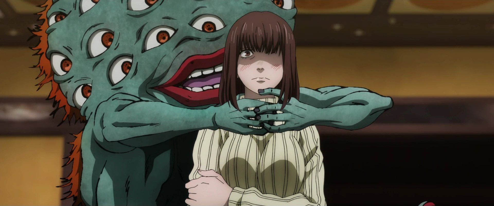

A Japanese manga series written and illustrated by Gege Akutami.

Setting
In Jujutsu Kaisen, all living beings emanate energy called Cursed Energy (呪力, Juryoku), which arises from negative emotions that naturally flow throughout the body. Ordinary people cannot control this flow in their bodies. As a result, they continually lose Cursed Energy, resulting in the birth of Curses (呪い, Noroi), a race of spiritual beings whose primary desire is to bring harm to humanity. These Curses are shown as gruesome monsters, ghosts, and yōkai.
Jujutsu Sorcerers (呪術師, Jujutsushi, lit. "Cursed Technique Masters" or "Shamans") are people who control the flow of Cursed Energy in their bodies, allowing them to use it as they please and also to reduce its release. High-ranking Sorcerers and Curses can refine this energy and use it to perform Cursed Techniques (呪術式, Jujutsushiki), which tend to be unique to the user or their family. An advanced form of Cursed Technique is Domain Expansion (領域展開, Ryōiki Tenkai), which the users build a pocket dimension of variable size. Inside the domain, all of their attacks will always connect and grow in strength.



Main Plot
Yuji Itadori is an unnaturally fit high school student living in Sendai. On his deathbed, his grandfather instils two powerful messages within Yuji: "always help others" and "die surrounded by people." Yuji's friends at the Occult Club attract Curses to their school when they unseal a rotten finger talisman. Yuji swallows the finger to protect Jujutsu Sorcerer Megumi Fushiguro, becoming host to a powerful Curse named Ryomen Sukuna. Due to Sukuna's evil nature, all sorcerers are required to exorcise him (and, by extension, Yuji) immediately.
However upon seeing Yuji retaining control over his body, Megumi's teacher Satoru Gojo brings him to the Tokyo Prefectural Jujutsu High School with a proposal to his superiors: postpone Yuji's death sentence and train under Gojo until he consumes all 20 of Sukuna's fingers so the Curse can be eliminated. At the same time, a group of Cursed Spirits plot a multi-layered attack on the world of Jujutsu sorcery, including the Cursed Spirit Mahito and a corrupted sorcerer named Suguru Geto, who was executed by Gojo a year prior.
Main Characters
Satoru Gojo
Satoru Gojo (五ご条じょう悟さとる Gojō Satoru?) is one of the main protagonists of the Jujutsu Kaisen series. He is a special grade jujutsu sorcerer and widely recognized as the strongest in the world. Satoru is the pride of the Gojo Family, the first person to inherit both the Limitless and the Six Eyes in four hundred years. He works as a teacher at the Tokyo Jujutsu High and uses his influence to protect and train strong young allies.
More InfoSuguru Geto
Suguru Geto (夏げ油とう傑すぐる Getō Suguru?) is an antagonist in both the Jujutsu Kaisen series and its prequel Jujutsu Kaisen 0: Jujutsu High. He was originally a student of Masamichi Yaga's alongside Satoru Gojo and Shoko Ieiri at Tokyo Jujutsu High. His experiences as a jujutsu sorcerer bred a deep hatred for non-sorcerers, leading to an incident where Suguru massacred over a hundred civilians in a single night. He was expelled from Jujutsu High and came to be known as the worst of all curse users.
More InfoToji Fushiguro
Toji Fushiguro (伏ふし黒ぐろ甚とう爾じ Fushiguro Tōji?), born Toji Zenin (禪ぜん院いん甚とう爾じ Zen'in Tōji?) is a recurring character in the Jujutsu Kaisen series. He was a former member of the Zenin family and the infamous assassin known as the Sorcerer Killer (術じゅつ師し殺ごろし Jutsushi Goroshi?), contracted by the Time Vessel Association among other groups throughout his time as a non-curse user. He was also the father of Megumi Fushiguro and former enemy of Satoru Gojo. While working for the Star Religious Group, Toji serves as the primary antagonist of the Gojo's Past Arc.
More Info
Yuji Itadori
Yuji Itadori (虎いた杖どり悠ゆう仁じ Itadori Yūji?) is the main protagonist of the Jujutsu Kaisen series. He is the son of Jin Itadori and Kaori Itadori. Yuji is the grandson of Wasuke Itadori who was living a normal life until he encountered Megumi and ate one of Sukuna's fingers. After becoming Sukuna's vessel, Yuji began attending Tokyo Jujutsu High alongside Megumi and Nobara as first-year students.
More Info